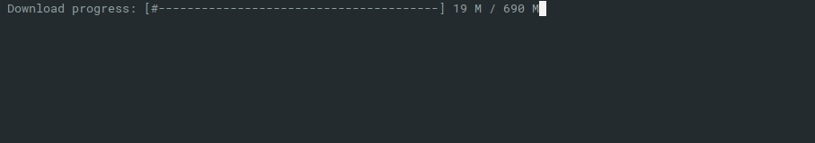

Scrapper_Downloader module¶
Download file.

Designed for downloading large files (600 M ~ 36 G).
Support:
resume downloading
5 retries when link broken
show progress bar
from Scrapper_Downloader import download
url = "https://dumps.wikimedia.org/enwiktionary/latest/enwiktionary-latest-pages-articles.xml.bz2"
dest = "./cached/enwiktionary-latest-pages-articles.xml.bz2"
download( url, dest )
-
Scrapper_Downloader.download(url, local_file, attempts=5)[source]¶ Download file from url to local_file.
- Parameters
url (str) – Remote file url
local_file (str) – Local file path and name
attempts (int) – When link is broken retry attempts times
- Returns
True if downloading finished. None else.
from Scrapper_Downloader import download url = "https://dumps.wikimedia.org/enwiktionary/latest/enwiktionary-latest-pages-articles.xml.bz2" dest = "./cached/enwiktionary-latest-pages-articles.xml.bz2" download( url, dest )
-
Scrapper_Downloader.get_http_file_size(url)[source]¶ Get size of remote file url
- Parameters
url (str) – Remote file name
- Returns
(int) file size
url = "https://dumps.wikimedia.org/enwiktionary/latest/enwiktionary-latest-pages-articles.xml.bz2" remote_file_size = get_http_file_size( url )
-
Scrapper_Downloader.get_local_file_size(file_name)[source]¶ Return size of local file file_name
- Parameters
file_name (str) – Path to file
- Returns
(int) file size
local_file = "./cached/enwiktionary-latest-pages-articles.xml.bz2" local_file_size = get_local_file_size( local_file )
-
Scrapper_Downloader.requests_retry_session(retries=5)[source]¶ Helper function. It help retry download when link broken. retries retries.
- Parameters
retries (int) – Maximum retries attempts to connect and download file
- Returns (request.Session):
Session object
session = requests_retry_session( retries=5 ) response = session.get( url )